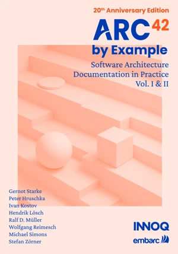
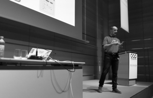
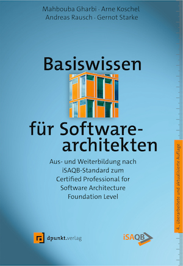

arc42 by Example, Anniversary Edition
Nine real IT systems from different domains, all documented with arc42.
View book →06 / Resources
Find practical material by language, medium, topic, and availability. Every result states what it is before sending you elsewhere.
7 resources

Nine real IT systems from different domains, all documented with arc42.
View book →Detailed preparation for the iSAQB CPSA Foundation examination.
View book →
Worked examples including a chess engine, CRM, biking application, and menu-bar tool.
View book →A concise history of the template, its community, and related projects.
Read source article →What makes architecture diagrams confusing, and how to improve them.
Watch video →
A practical walkthrough of using the template with stakeholders and teams.
View talk →
Foundation-level software architecture knowledge in German.
View book →Remove one or more filters, or clear everything to return to the full archive.
Maintained catalog
A future production catalog should track editorial owner, last review, broken external destinations, and whether a resource still represents current arc42 practice.